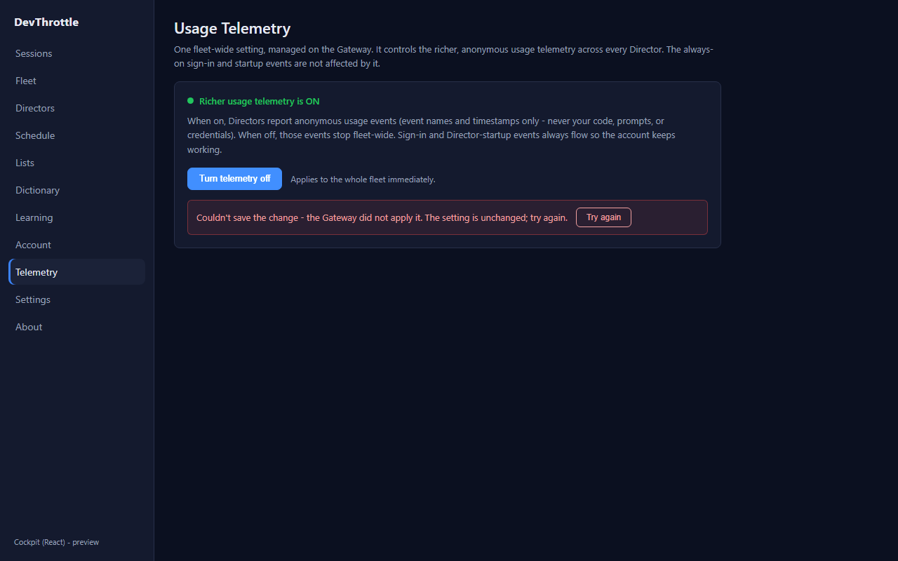
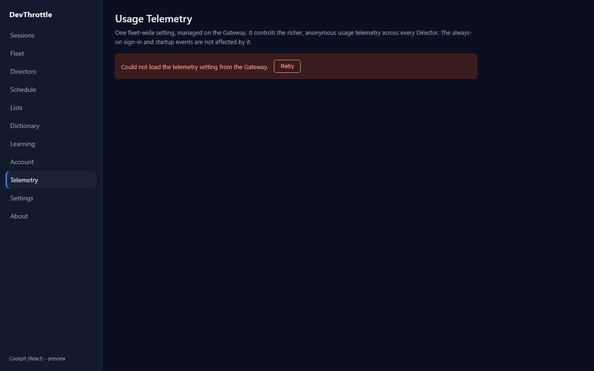
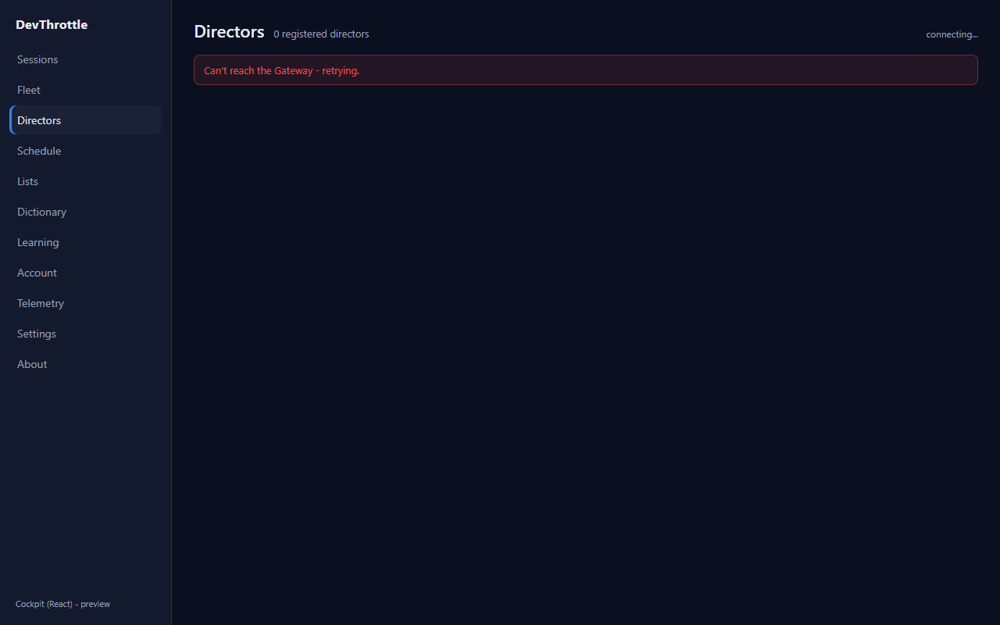
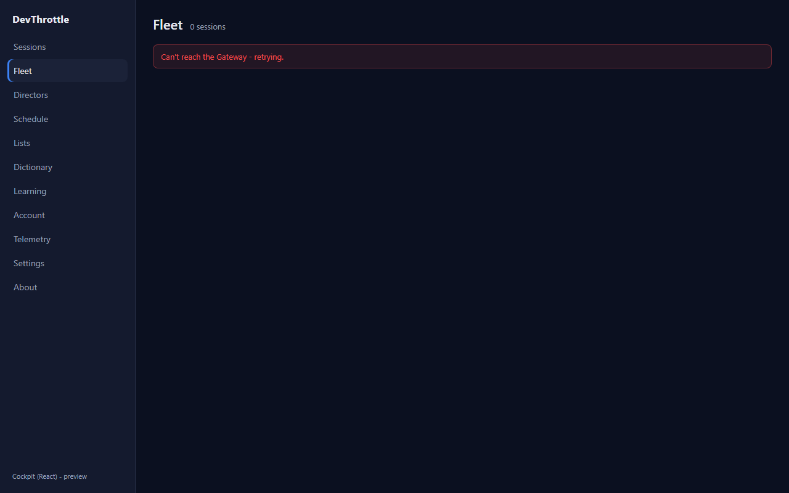
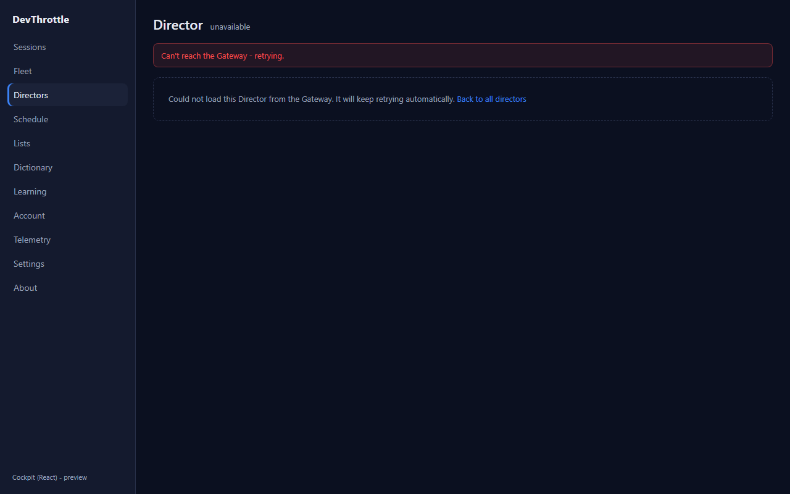
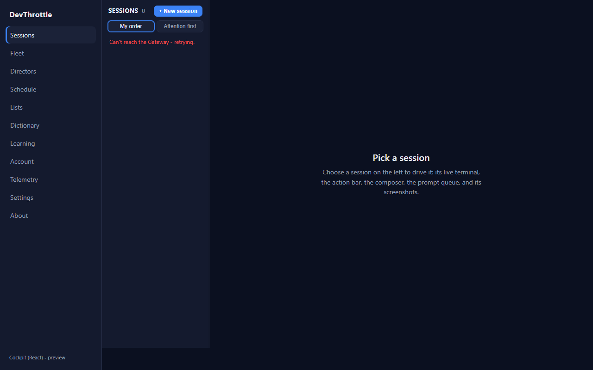

Developer Agent proof · branch issue-1028-cockpit-error-states · epic #967
gatewayErrorMessage(err) and GATEWAY_UNREACHABLE_MESSAGE to
packages/client-core/src/api/client.ts. It collapses any error thrown by a Gateway
read/write into ONE user-facing line: an unreachable Gateway (a bare fetch rejection
when the backend is down, or a 502/503/504) becomes
"Can't reach the Gateway - retrying."; a GatewayError that already carries human copy
(401 re-auth, 402 credits) is passed through; any other status is reported by number only. The raw
METHOD /path failed: NNN diagnostic never reaches the user.TelemetryView now keeps load and save
failures in SEPARATE state. A failed PUT /gateway/telemetry-consent sets an inline
saveError rendered beneath the still-visible toggle, with correct "couldn't save, try
again" copy and a Try again button - it no longer routes through the page-level load-error branch
that blanked the whole card with a mislabeled "could not load" banner.gatewayErrorMessage and drop the
hard-coded "Gateway error:" / "Failed to fetch sessions:" prefixes.packages/client-core/src/api/gatewayError.test.ts pins the
mapping (8 cases); full client-core suite 87/87 green.| Criterion | Result | Evidence |
|---|---|---|
| A failed telemetry save keeps the toggle on screen, shows a correct inline "couldn't save" message, and allows retry in place. | PASS | telemetry-save-fail.png - toggle "Turn telemetry off" and the "ON" state label remain; inline "Couldn't save the change … try again." + Try again button. |
No page shows a raw GET /path failed: NNN string to the user. |
PASS | directors-error.png, fleet-error.png, director-detail-error.png, telemetry-load-fail.png, roster-cold-error.png - every banner reads a friendly sentence; no method/path/status. |
| Director-detail failure is a clear error (not stuck loading). | PASS | director-detail-error.png - header shows "unavailable", explicit error body with "Back to all directors"; no "loading…". |
| Cold-start roster shows the friendly message. | PASS | roster-cold-error.png - "Can't reach the Gateway - retrying." on a never-loaded roster. |
| Full build gate clean (cockpit build, lint, Gateway RunCockpitBuild, cc-director.sln). | PASS | cockpit npm run build OK; eslint . clean; Gateway
-p:RunCockpitBuild=true Build succeeded 0/0; dotnet build cc-director.sln
Build succeeded 0 Warning(s) 0 Error(s); client-core vitest 87/87. |
The running React Cockpit (Vite) was driven with Playwright; an in-page fetch
shim installed before app load forced the exact failures the issue describes - a 503 from a reachable
Gateway, and a bare network rejection ("Failed to fetch") for the cold roster - with the SHIPPED code
unchanged. Each screenshot is the real rendered error state.






No architecture or security drift. This is presentation-layer error copy plus one shared client-core
helper; no new container, endpoint, dependency, or data flow. No docs/cencon/ update
required.
I believe this is finished.